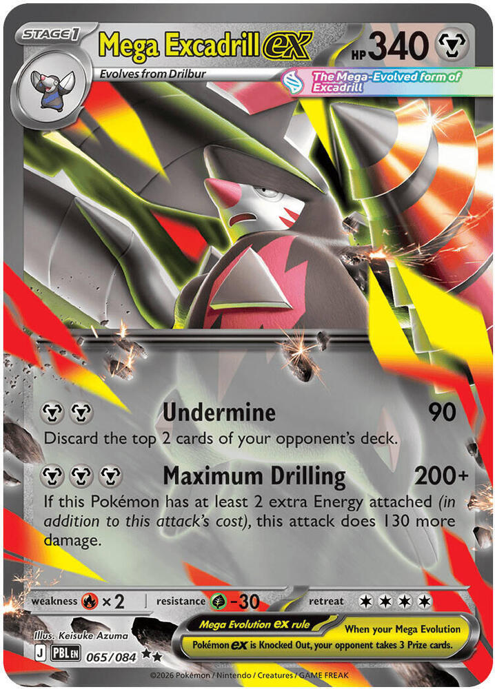
x3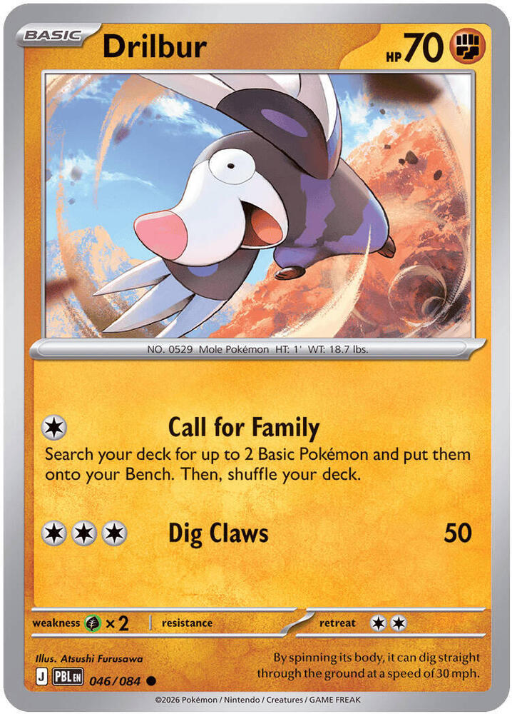
x4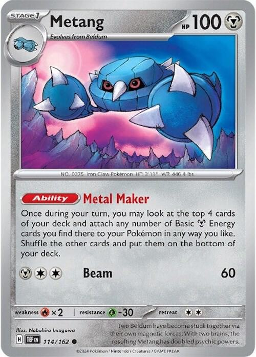
x4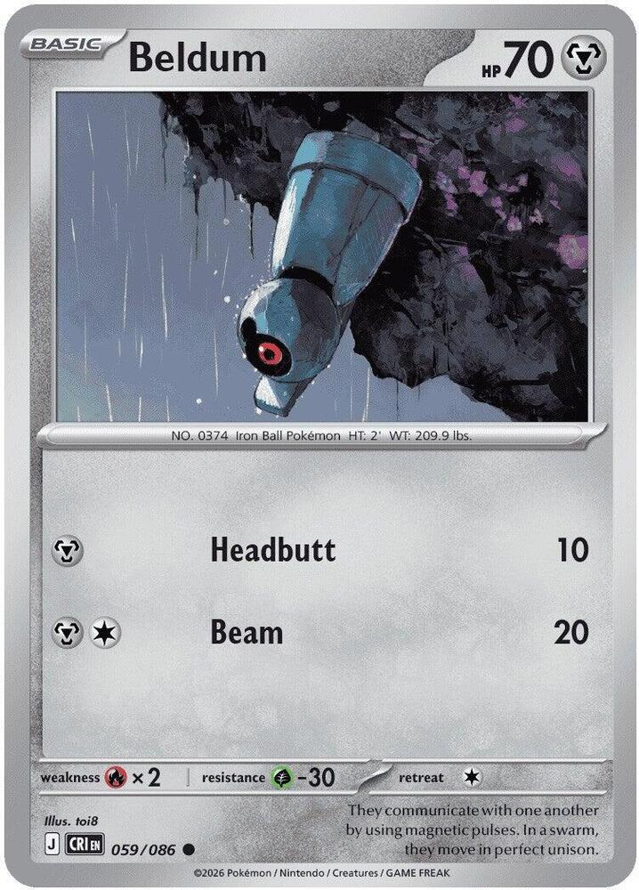
x4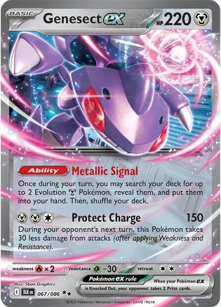
x2
 x4
x4![Boss's Orders [Ghetsis]](./assets/654453_bosss-orders-ghetsis.jpg) x3
x3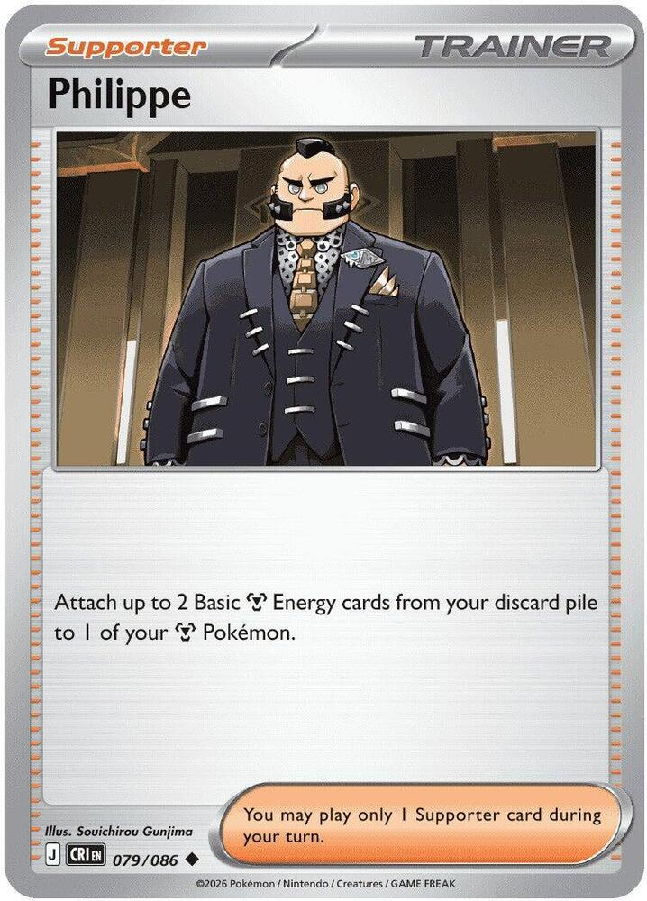
x2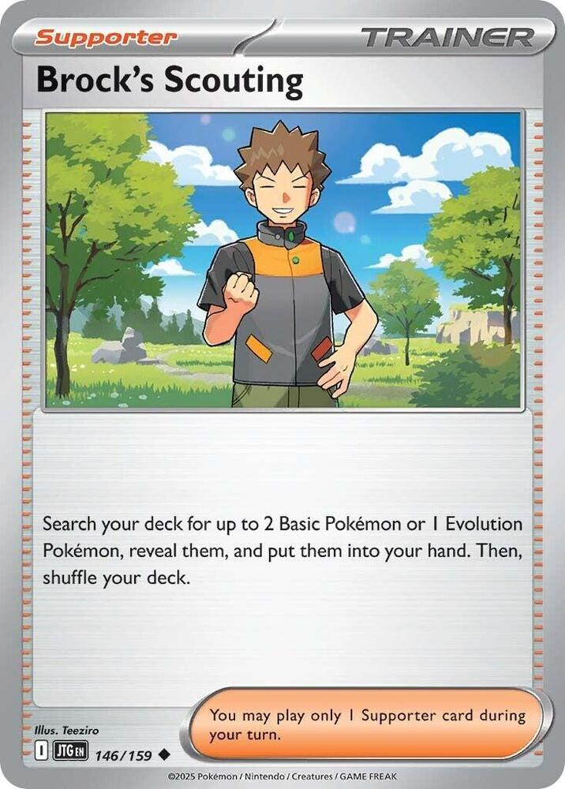
x2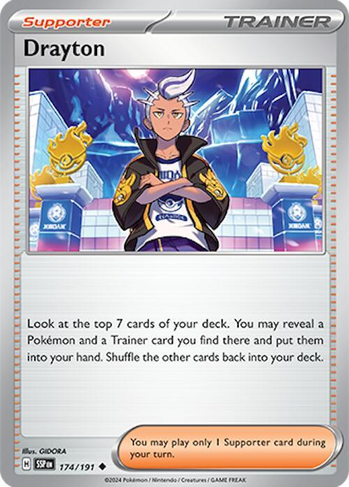
 x4
x4 x3
x3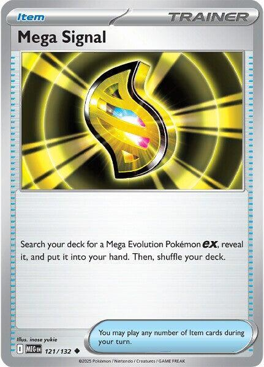
x2 x2
x2 x2
x2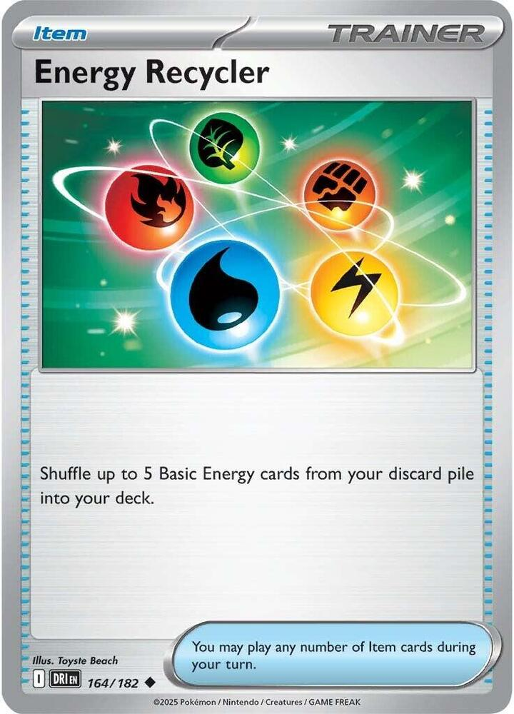

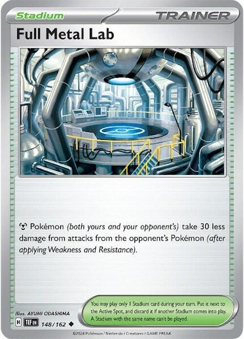
x2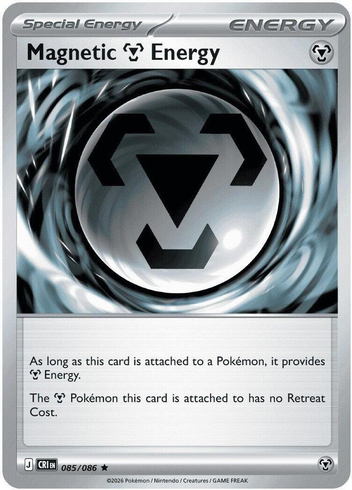
x2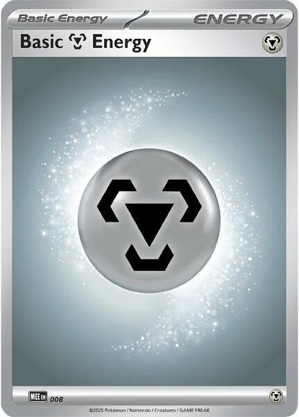
x11 Fox's Iron Excavation
Fox's Iron Excavation 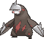
Tournament · Mega Excadrill ex, and the fifth Energy that turns 200 into 330
← back to all decksMaximum Drilling costs three Metal Energy and does 200 damage. Attach two more and it does 330.
Read that table twice, because it is the entire deck. The fourth Energy buys nothing at all. The fifth Energy is worth 130 damage on its own, which is more than most cards in the format do in a turn. There is no ramp here, only a cliff, and every card in the list is here to get you over it.
330 is a good number to land on. It one-shots Dragapult ex at 320 and it one-shots essentially every two-Prize ex in the format. The things it does not one-shot are the 340-plus Mega Evolution ex, and that is the same wall everybody is hitting.
The other half of the thesis is that 340 HP is above the format's ceiling. The hardest common single hit in Standard right now is Maximum Drilling itself at 330. Excadrill hits above the wall and sits above the ceiling. It survives what it dishes out, which means the deck wins races it should not win by simply refusing to die on schedule.
Two things make that a deck rather than a wish. Metang turns the top of your library into Energy attachments, four cards at a time, once per copy per turn. Genesect ex searches out two Evolution Metal Pokémon at once, which in this list means Metang and Mega Excadrill ex off a single Ability.

x3
x4
x4
x4
x2x4x3
x2
x2
x4x3
x2x2x2

x2
x2
x11Pokémon (18)
| Qty | Card | Set | Number | Reg |
|---|---|---|---|---|
| 3 | Mega Excadrill ex | Pitch Black | 065 | J |
| 4 | Drilbur | Pitch Black | 046 | J |
| 4 | Metang | Temporal Forces | 114 | H |
| 4 | Beldum | Chaos Rising | 059 | J |
| 2 | Genesect ex | Black Bolt | 067 | I |
| 1 | Fezandipiti ex | Shrouded Fable | 038 | H |
Trainers (29)
| Qty | Card | Type | Set | Number | Reg |
|---|---|---|---|---|---|
| 4 | Lillie's Determination | Supporter | Mega Evolution | 119 | I |
| 3 | Boss's Orders | Supporter | Mega Evolution | 114 | I |
| 2 | Philippe | Supporter | Chaos Rising | 079 | J |
| 2 | Brock's Scouting | Supporter | Journey Together | 146 | I |
| 1 | Drayton | Supporter | Surging Sparks | 174 | H |
| 4 | Ultra Ball | Item | Mega Evolution | 131 | I |
| 3 | Buddy-Buddy Poffin | Item | Temporal Forces | 144 | H |
| 2 | Mega Signal | Item | Mega Evolution | 121 | I |
| 2 | Night Stretcher | Item | Shrouded Fable | 061 | H |
| 2 | Switch | Item | Mega Evolution | 130 | I |
| 1 | Energy Recycler | Item | Destined Rivals | 164 | I |
| 1 | Prime Catcher | Item | Prismatic Evolutions | 119 | H |
| 2 | Full Metal Lab | Stadium | Temporal Forces | 148 | H |
Energy (13)
| Qty | Card | Set | Number | Reg |
|---|---|---|---|---|
| 2 | Magnetic Metal Energy | Chaos Rising | 085 | J |
| 11 | Basic Metal Energy | Mega Evolution Energies | 008 | - |
18 + 29 + 13 = 60. ✓
Basics: 11 (4 Drilbur, 4 Beldum, 2 Genesect ex, 1 Fezandipiti ex), which lands inside the 75-85% band for opening with something playable. Drilbur and Beldum both sit at exactly 70 HP, so every Buddy-Buddy Poffin in the deck finds two of the cards you actually want on turn one. That is not luck. It is why those two prints were chosen over the four other legal Drilbur.


 Metal
Metal Fire ×2
Fire ×2 Grass -30
Grass -30 4
4 legal (Reg J)Undermine (90) - Discard the top 2 cards of your opponent's deck.Maximum Drilling (200+) - If this Pokémon has at least 2 extra Energy attached (in addition to this attack's cost), this attack does 130 more damage.
legal (Reg J)Undermine (90) - Discard the top 2 cards of your opponent's deck.Maximum Drilling (200+) - If this Pokémon has at least 2 extra Energy attached (in addition to this attack's cost), this attack does 130 more damage.Stage 1 from Drilbur. Gives up 3 Prize cards. 340 HP, Retreat 4, Fire Weakness, and a Grass Resistance of 30 that quietly matters more than it looks.
Maximum Drilling is for 200, plus 130 more when at least two extra Energy are attached. Five Energy total, 330 damage, every turn, with no cooldown and no self-discard. Nothing about the attack punishes you for using it twice in a row, which separates this card from most big attackers in the format.
Undermine is for 90 and discards the top two cards of the opponent's deck. It is the turn-two attack while you are still counting to five, and the mill is not a win condition; treat those two cards as a rounding error you get for free.
Three copies. Between the three, two Mega Signal, and two Genesect ex, the deck has fourteen ways to find one, so all copies prized is not a thing that happens. Three is also the ceiling on purpose: each one on the board is three Prizes standing in the open, and you only ever want one of them out at a time.
Retreat 4 is the worst number on the card, and it is the reason both Magnetic Metal Energy and two Switch are in the list. Read game plan 4 before you sleeve it.

 FightingGrass ×22legal (Reg J)Call for Family - Search your deck for up to 2 Basic Pokémon and put them onto your Bench. Then, shuffle your deck.Dig Claws (50)
FightingGrass ×22legal (Reg J)Call for Family - Search your deck for up to 2 Basic Pokémon and put them onto your Bench. Then, shuffle your deck.Dig Claws (50)The Basic the deck stands on, and the Pitch Black print specifically. Four other Drilbur are Standard legal and the other four are worse here.
Call for Family searches your deck for up to 2 Basic Pokémon and benches them, for one Colorless. A Metal Energy pays that cost, so turn one reads: bench Drilbur, attach, search out two Beldum. One card turns into a full board, and it is the difference between a turn-three Maximum Drilling and a turn-five one.
70 HP keeps it inside Poffin range. It is Fighting type, not Metal, which costs you nothing except that Philippe cannot target it and Grass hits it for double. Nobody is aiming Grass at a benched Drilbur.
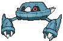
 Metal Energy cards you find there to your Pokémon in any way you like. Shuffle the other cards and put them on the bottom of your deck.Fire ×2Grass -302legal (Reg H)Beam (60)
Metal Energy cards you find there to your Pokémon in any way you like. Shuffle the other cards and put them on the bottom of your deck.Fire ×2Grass -302legal (Reg H)Beam (60)The engine, and the only card in this deck that is not replaceable. Four copies, and it is the Temporal Forces print. The Chaos Rising and Journey Together Metang have no Ability at all and do not serve this line.
Metal Maker: once during your turn, look at the top 4 cards of your deck and attach any number of Basic Metal Energy you find there to your Pokémon, in any way you like. Once per copy, so three Metang on the Bench is three looks at four cards each, every single turn, with your hand untouched. With eleven basic Metal in the deck that averages out to roughly one Energy per look. Three Metang plus your ordinary attachment for the turn is the fifth Energy arriving on schedule.
The card asks for Basic Metal Energy, so Magnetic Metal Energy is invisible to it. That is the whole reason the special Energy count stops at two.
100 HP and Retreat 2 make it the card the opponent gusts. That is what the Switch are for.
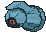
 MetalFire ×2Grass -301legal (Reg J)Headbutt (10)Beam (20)
MetalFire ×2Grass -301legal (Reg J)Headbutt (10)Beam (20)70 HP, Poffin-legal, Retreat 1, and its entire job is becoming Metang. Four copies, because the Bench wants three Metang standing for the whole game and the line cannot afford to draw the wrong half. Headbutt does 10 damage and you will never use it.
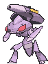
 MetalFire ×2Grass -302legal (Reg I)Protect Charge (150) - During your opponent's next turn, this Pokémon takes 30 less damage from attacks (after applying Weakness and Resistance).
MetalFire ×2Grass -302legal (Reg I)Protect Charge (150) - During your opponent's next turn, this Pokémon takes 30 less damage from attacks (after applying Weakness and Resistance).The search engine and the plan B in one Basic. 220 HP, Retreat 2.
Metallic Signal: once during your turn, search your deck for up to 2 Evolution Metal Pokémon and put them into your hand. In this list that reads "a Metang and a Mega Excadrill ex" off one Ability, which is the exact pair every early turn is hunting. It is the reason the deck can run three Excadrill instead of four and still never whiff.
Protect Charge is for 150, and this Pokémon takes 30 less damage during the opponent's next turn. Two copies, and the second one is not a spare. When Excadrill is not ready, Genesect attacks for real numbers off a body that gives up two Prizes instead of three, and the damage reduction stacks with Full Metal Lab for a 60-point shield.

 DarknessFighting ×21legal (Reg H)Cruel Arrow - This attack does 100 damage to 1 of your opponent's Pokémon. (Don't apply Weakness and Resistance for Benched Pokémon.)
DarknessFighting ×21legal (Reg H)Cruel Arrow - This attack does 100 damage to 1 of your opponent's Pokémon. (Don't apply Weakness and Resistance for Benched Pokémon.)One copy, and it is the comeback button. Flip the Script draws 3 cards once during your turn if any of your Pokémon were Knocked Out during the opponent's last turn.
A deck that hands over three Prizes at a time is a deck that gets Knocked Out, which means this Ability is live far more often here than in most lists. It is 210 HP of Darkness-type furniture that never attacks, so it only goes on the Bench when there is a seat free. Shared with the Curse Toll deck, which runs two.

 legal (Reg I)
legal (Reg I)The draw engine, at the full four. Shuffle your hand into your deck and draw 6, or 8 while you still have all six Prize cards. The shuffle half is the good half here: spare Beldum and dead Drilbur go back into the library where Metal Maker can bury them again, and a hand full of Energy you cannot attach becomes six fresh cards.
legal (Reg I)Switch in 1 of your opponent's Benched Pokémon to the Active Spot. Three copies. 330 damage is only worth what it is aimed at, and the games this deck loses are the ones where the opponent parks a cheap wall out front and rebuilds behind it. The Ghetsis print, shared across every deck in the house.
legal (Reg J)The rebuild card. When a loaded Excadrill dies, five Energy hit the discard pile at once, and the deck's whole problem starts over from zero. Philippe puts two of them straight back onto the next one, which turns a two-turn rebuild into a one-turn rebuild. Two copies, and it is the most underrated card in the list.
It reads "your Metal Pokémon," so it can never target Drilbur. Evolve first, then Philippe.
 legal (Reg I)
legal (Reg I)Search your deck for up to 2 Basic Pokémon or 1 Evolution Pokémon. Two copies. Early it fetches Drilbur and Beldum together; late it fetches the Excadrill that Genesect already used its Ability for this turn. One card that answers both halves of the curve is worth more than a second copy of either specialist.
 legal (Reg H)
legal (Reg H)Look at the top 7 cards of your deck and take a Pokémon and a Trainer from them. One copy, and it is the flex Supporter. It digs seven deep in a deck where the top four are already spoken for by Metal Maker, and it is the first slot Test and Tune trades away.
legal (Reg I)Discard 2 cards from your hand, then search your deck for any Pokémon. Four copies. The discard is close to free in this deck and occasionally a bonus, because Energy in the discard pile is exactly what Philippe and Night Stretcher want to find there.
legal (Reg H)Search your deck for up to 2 Basic Pokémon with 70 HP or less and bench them. Drilbur is 70 and Beldum is 70, so both halves of the deck's opening are always live targets and Poffin is never a dead card on turn one. Three copies, shared with three other decks in the box.
legal (Reg I)Search your deck for a Mega Evolution Pokémon ex. Two copies, and it is the reason three Excadrill is enough. Straight, unconditional, no discard, no cost. The house owns one already.
legal (Reg H)Put a Pokémon or a basic Energy card from your discard pile into your hand. Both halves matter here. The dead Excadrill comes back, and so does the basic Metal that went down with it. It can never touch Magnetic Metal Energy, because special Energy stays where it falls.
legal (Reg I)Switch your Active Pokémon with 1 of your Benched Pokémon. Two copies, which is one more than most decks in this house run, and Retreat 4 is the reason. The more common emergency is not Excadrill being stuck, it is a gusted Metang sitting Active for a turn while your engine idles.
 legal (Reg I)
legal (Reg I)Shuffle up to 5 Basic Energy cards from your discard pile into your deck. One copy. Metal Maker reads the top four cards of your library, so its hit rate is a function of how much Metal is still in there. Late game this card is not recovery, it is a reload for the engine.

 ACE SPEC Rarelegal (Reg H)
ACE SPEC Rarelegal (Reg H)The ACE SPEC. Switch in one of the opponent's Benched Pokémon, and if you do, switch your own Active with a Benched Pokémon. It is a Boss's Orders and a Switch stapled together as an Item, which means it plays on the same turn as a Supporter, and both halves are cards this deck already wanted. The deck-list warning covers the print rule and the contention with the other two decks.
Pokémon (both yours and your opponent’s) take 30 less damage from attacks from the opponent's Pokémon (after applying Weakness and Resistance).legal (Reg H)The Fire patch, and it is the only one this deck gets. The reduction is applied after Weakness, which is exactly the order that saves you: a 170-damage Fire attack doubles to 340 and kills a healthy Excadrill on the nose, and Full Metal Lab drops it to 310. Two copies, because the opponent will play their own Stadium over it and you need the second one to put it back.
It is symmetrical, and against the Mega Excadrill mirror it helps them the same amount it helps you. That costs nothing, because 330 into 340 already was not a knockout.
 Energy. The Pokémon this card is attached to has no Retreat Cost.legal (Reg J)
Energy. The Pokémon this card is attached to has no Retreat Cost.legal (Reg J)Two copies, and this is the most important tech card in the house. It fixes Retreat 4 for free while still counting as one of the five Energy that Maximum Drilling needs, so it costs the deck literally nothing to run.
What it does to the lantern deck is covered in game plan 4 and it is worth reading before the next kitchen-table night.
Two and no more, for one reason: it is a Special Energy, so Metal Maker cannot attach it, Night Stretcher cannot recover it, and Energy Recycler cannot reload it. The eleven basic Metal underneath it are the renewable half.
legalEleven copies, and the count is load-bearing rather than arbitrary. Metal Maker looks at four cards and attaches whatever Metal it finds, so the density of basic Metal in the library is directly the engine's throughput. Eleven in sixty works out to roughly one hit per look, which is what makes three Metang worth three Energy a turn.
This is the number Test and Tune watches hardest, in both directions. Basic Energy never rotates and any English print is legal.
The deck makes one ordinary attachment per turn like everybody else. Everything past the first one comes from here.
| Job | Card | What it does |
|---|---|---|
| Accelerate | 4 Metang | top 4 of your deck, attach every basic Metal in them, once per copy |
| Rebuild | 2 Philippe | two basic Metal from the discard onto one Metal Pokémon |
| Recover | 2 Night Stretcher | a Pokémon or a basic Energy back to hand |
| Reload | 1 Energy Recycler | five basic Energy from the discard back into the library |
| Fix retreat | 2 Magnetic Metal Energy | counts as the fifth Energy and zeroes Retreat 4 |
The shape of a normal game is three Metang on the Bench by turn three, each one seeing four cards, plus your attachment for the turn. That is four Energy a turn arriving without spending a card from hand.
| Attack | Cost | Damage | Kills |
|---|---|---|---|
| Undermine | | 90 | nothing; it is the turn-two placeholder |
| Maximum Drilling, 3 or 4 Energy | | 200 | the small support Pokémon |
| Maximum Drilling, 5 Energy | | 330 | Dragapult ex and nearly every two-Prize ex |
| Protect Charge (Genesect ex) | | 150 | the one-Prize bodies, off a two-Prize attacker |
What 330 does not kill is the 340-to-380 tier: Mega Excadrill in the mirror, Mega Gengar ex at 350, Mega Chandelure ex at 350. Against all three, plan on two hits and count on your own 340 surviving theirs.
Incoming damage runs the other way. A healthy Excadrill survives any single non-Fire attack in the format. With Full Metal Lab down it survives a good deal more than that.
| Against | Their hit | After Full Metal Lab | Survives? |
|---|---|---|---|
| Mega Gengar ex, Void Gale | 230 | 200 | yes, twice |
| Mega Excadrill mirror | 330 | 300 | yes |
| A 170 Fire attack, doubled | 340 | 310 | only with the Stadium down |
This is the part to teach before the first game, because it is where the deck is genuinely dangerous to its pilot.
Excadrill gives up three Prizes. Two knockouts on it and the game is over, which means the opponent needs to land two hits and you need to land three. That trade is bad on paper and the deck wins anyway, for one reason: at 340 HP almost nothing in the format takes those two hits in two turns. You are not trading evenly, you are betting that they cannot cash their side of the trade fast enough.
The bet goes wrong in exactly two ways, and both are avoidable.
The counterweight is that everything else in the deck is cheap. Metang, Beldum, and Drilbur are one Prize each, and Genesect ex is two. When the Prize race is going badly, attacking with Genesect for 150 off a two-Prize body is frequently the correct play, and it is the play most kids will not make because the big one is right there.
Bench Drilbur, attach a Metal Energy to it, use Call for Family, and take two Beldum. If Poffin is in hand, play it first and take two more bodies. The board you want at the end of turn one is Drilbur Active with two or three Beldum behind it.
Going second you get an attack, so this is free. Going first you cannot attack, and the same board has to come out of Poffin, Brock's Scouting, or Ultra Ball instead. Losing turn one costs you roughly one full turn of Metal Maker, which is one Energy, which is the difference between 200 and 330 on turn three.
The instinct is to evolve Drilbur into the Mega as fast as possible. Resist it for one turn. Metang on the Bench is worth more on turn two than Excadrill is, because Excadrill with two Energy does nothing that Drilbur was not already doing.
The correct turn two is: evolve two Beldum into Metang, evolve Drilbur into Mega Excadrill ex, attach, use both Metal Makers, and attack with Undermine for 90. That puts you at three or four Energy going into turn three, and turn three is the one that matters.
Before you declare Maximum Drilling, count the Energy on Excadrill out loud. Four is 200. Five is 330. Attacking at four when one more Metal Maker would have found the fifth is the single most common way to lose a game with this deck, and it is invisible unless you count.
If you are sitting at four Energy with a Metal Maker unused, use the Ability first. Always. The Ability is free and the attack ends your turn.

Mega Chandelure ex does 130 damage plus 50 more for each Colorless in your Active Pokémon's Retreat Cost, and its Binding Flame Ability adds one to that cost from anywhere on the board.
Excadrill retreats for 4. Do the arithmetic before dad does.
| Excadrill's Retreat | Flames in play | Phantom Maze |
|---|---|---|
| 4, printed | 0 | 330 |
| 4, printed | 1 | 380 |
| 4, printed | 2 | 430 |
| 0, Magnetic Metal attached | any | 130 |
One Binding Flame and a healthy 340 Excadrill dies to a single attack. That is the worst matchup in the house by a wide margin, and one Energy card erases it completely, because "has no Retreat Cost" overrides the increase rather than being added to it. The lantern page works the same ruling from the other side with Latias ex.
Against the lanterns, Magnetic Metal Energy is not a nice-to-have. It is the first Energy you attach and you mulligan your plans around finding it.
When it dies, five Energy go to the discard and the opponent takes three Prizes. The rebuild is a known sequence, so run it rather than panicking.
Play the next Drilbur or evolve one already benched, then Philippe for two Energy from the discard, then your attachment for the turn. That is three Energy on a fresh Excadrill in one turn, and Metal Maker covers the rest. Fezandipiti ex draws you three cards for having lost the Pokémon in the first place.
If the board cannot support that, attack with Genesect ex for 150 and spend a turn rebuilding behind it. A two-Prize attacker doing real damage is how this deck survives a bad trade.
Keep any hand with a Drilbur or Beldum plus a way to find more. Keep any hand with Poffin. Keep any hand with Lillie's Determination and one Basic.
The hand to be unhappy about is Energy plus Excadrill and no Basic to grow it on, because Mega Excadrill ex in your opening hand is a card you cannot play for two turns. Three Energy and no Pokémon is a mulligan you did not get to take.

Xero's Psychic Lanterns, the one that needs homework. Covered in full in game plan 4. Without Magnetic Metal Energy attached you lose a 340 HP Pokémon to one attack; with it, Phantom Maze floors at 130 and needs three turns to do what it was going to do in one. Nothing else in that deck threatens Excadrill's HP. Gourgeist ex is the real problem instead, because Horrifying Rondo scales off his own damaged Bench and ignores retreat entirely, and Froslass will be putting a counter on every Ability Pokémon you own every Checkup. Your Metang all have Abilities. Expect to be chipped and play Full Metal Lab early.
Xero's Curse Toll deck, the even fight. Void Gale is 230 into your 340, so he needs two hits, and your 330 into his 350 means you need two as well. Neither of you exploits the other's Weakness; Metal does not fear Darkness and his Gengars fear Fighting. The Stadium turns his 230 into 200, which does not change the hit count but does mean a chipped Excadrill survives a turn longer than he expects. Watch Tricky Steps on Gengar ex moving Energy off your Active, because in this deck moving one Energy is the difference between 330 and 200. Win it by gusting Munkidori and Fezandipiti with Boss's Orders and refusing to trade Excadrill for anything smaller than a Mega.
Xero's Gengar Gang, the good matchup. Everything in that list is a one-Prize Stage 1 or Stage 2 in the 130 HP range. Maximum Drilling is comical overkill and Protect Charge off Genesect ex kills anything he has for 150. The danger is the Prize map running backwards: he takes six one-Prize knockouts slowly while two Excadrill deaths hand him the game in four. Lead with Genesect, keep exactly one Excadrill on the board, and let the 340 body grind. Punk Helmet and Risky Ruins both punish a deck that attacks every turn, so count his damage before swinging.
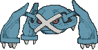
The mirror is the most likely matchup in the room. Mega Excadrill is the most-played deck in Standard right now at roughly 8% of the field. Neither side one-shots the other, so it is a grind decided by whoever assembles five Energy first and whoever runs out of Excadrill last. Full Metal Lab helps you both equally, which means it is not a factor. The tiebreakers are Boss's Orders on their Metang and your third Excadrill against their second.
Fire is the matchup to fear and to prepare for. A doubled Fire attack kills a healthy Excadrill outright. Full Metal Lab is the whole answer and two copies is the minimum, because they will play their own Stadium over yours. If Fire is common at your shop, the Iron Defender swap in Alternatives is the correct call and it is not close.
Grass decks are a free win and nobody expects it. Mega Excadrill ex, Metang, Beldum, and Genesect ex all resist Grass for 30. Grass is strong in the current meta specifically because it beats the Darkness Megas, and it does not beat this.
Single-prize grinder decks are the hardest games. They give up one Prize at a time while you give up three, and 330 damage into a 70 HP body is the worst rate in the format. Genesect ex attacking for 150 is the plan, and the games are long.
The list is a hypothesis; games are the data. Symptoms and their fixes:

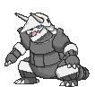
The cards that were considered and did not get a seat, kept warm.
| Card | Swaps for | Play it when |
|---|---|---|
| Maximum Belt (ACE) | Prime Catcher | the mirror decides your shop; +50 against an ex takes Maximum Drilling to 380, which one-shots the entire 340-to-380 Mega tier. Costs you the gust and the retreat fix, and it is blank against single-prize decks |
| Iron Defender ×2 | Drayton, 1 Switch | Fire is common; 30 less damage to all your Metal at Item speed, and it stacks with Full Metal Lab for a 60 shield |
| Cobalion ex (Chaos Rising 064) | Fezandipiti ex | you want a second real attacker; Metal Road moves any amount of Metal Energy onto it from your other Pokémon the moment it goes Active, which salvages a dying Excadrill's load |
| Registeel ex (Ascended Heroes 145) | Fezandipiti ex | you want a tank; Regi Charge attaches two basic Metal from the discard to itself for one Colorless, and Protecting Steel takes 50 less |
| Archaludon (Stellar Crown 107) | 4th Beldum, 1 Metang | Retreat 4 is losing games structurally; Metal Bridge gives every Metal Pokémon with Energy attached no Retreat Cost at all, which is Magnetic Metal for the whole board. Costs a Stage 1 line and Bench space this deck does not really have |
| 4th Mega Excadrill ex | Drayton | you keep prizing them, which at three copies you will not |
| Steven's Metagross ex | the whole deck | a different deck entirely; 340 HP Stage 2 whose Ability fetches Energy from the deck every turn. Needs Rare Candy and a Psychic Energy line, and it finished well outside the money at every 2026 regional |
| Hop's Zacian ex | the whole deck | also a different deck; the Reddit list's number one, but the card is a damage-spread attacker whose real lists splash Darkness partners, so it stops being a Metal deck |
Two cards were rejected outright. Klinklang's Gear Coating gives all your Metal Pokémon 20 damage reduction, which is real, but it is a Stage 2 line in a deck with no Rare Candy and no Bench room. And Wally's Compassion heals a Mega fully but puts all its Energy back into your hand, which on a Pokémon whose entire identity is five attached Energy is a downgrade dressed as a heal.
Own counts are live from the collection database. The Trainer shell is mostly already in the box and shared with the other sleeved decks, so check the box before ordering; the Pokémon are all new, because the binders had no Metal cards in them at all.
| Card | Own | Need | Buy | Note |
|---|---|---|---|---|
| 0 | 3 | 3 | Double Rare; 065, never the 103 collector print |
| 0 | 4 | 4 | the Call for Family print; the other four legal Drilbur do not serve this line |
| 0 | 4 | 4 | the Metal Maker print; the Chaos Rising and Journey Together copies have no Ability |
| 0 | 4 | 4 | |
| 0 | 2 | 2 | Double Rare; 067, not the 161 or 169 prints |
| 2 | 1 | ✓ | shared with the Mega Gengar deck, which runs 2 |
| 11 | 4 | ✓ | shared |
| 10 | 3 | ✓ | shared; the Ghetsis print |
| 0 | 2 | 2 | the rebuild card; 079, not 110 |
| 0 | 2 | 2 | |
| 0 | 1 | 1 | the flex slot; first thing Test and Tune trades away |
| 10 | 4 | ✓ | shared |
| 9 | 3 | ✓ | shared |
| 1 | 2 | 1 | shared |
| 10 | 2 | ✓ | shared |
| 7 | 2 | ✓ | shared |
| 0 | 1 | 1 | 164, not the Perfect Order 108 collector print |
| 1 | 1 | ✓ | ACE SPEC; contested with two other sleeved decks |
| 0 | 2 | 2 | the fire patch; two, because they will play over it |
| 0 | 2 | 2 | Special Energy; nothing recovers it once discarded |
| Basic Metal Energy MEE: Mega Evolution Energies 8 | 0 | 11 | 11 | never rotates; the count is load-bearing |
| Total to buy | 39 |